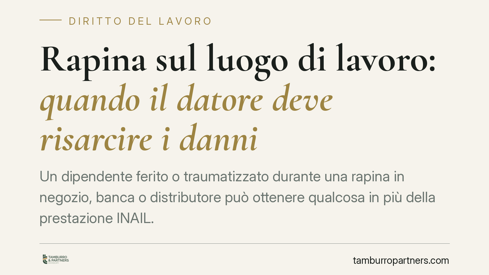

Rapina sul luogo di lavoro: quando il datore deve risarcire i danni
Un dipendente ferito o traumatizzato durante una rapina in negozio, banca o distributore può ottenere qualcosa in più della prestazione INAIL. A determinate condizioni il datore di lavoro risponde dei danni per non aver adottato misure di sicurezza adeguate. Vediamo quando scatta questa responsabilità e come muoversi in modo concreto.

Il fatto e perché conta
Una rapina sul posto di lavoro non è solo un evento di cronaca. Per chi la subisce durante l'orario di servizio può tradursi in lesioni fisiche, invalidità temporanea o permanente e, molto spesso, in un trauma psicologico duraturo.
La domanda ricorrente è semplice: oltre a quanto riconosce l'INAIL, il lavoratore può chiedere un risarcimento all'azienda? La risposta è affermativa, ma solo a precise condizioni.
Inquadramento normativo
Il riferimento centrale è l'art. 2087 del codice civile. La norma impone al datore di lavoro di adottare, nell'esercizio dell'impresa, tutte le misure che, secondo la particolarità del lavoro, l'esperienza e la tecnica, sono necessarie a tutelare l'integrità fisica e la personalità morale del lavoratore.
Si tratta di una cosiddetta norma di chiusura: anche in assenza di una regola specifica che imponga un determinato presidio, il datore resta tenuto a proteggere il dipendente da rischi prevedibili. In contesti esposti a rapine — esercizi commerciali, filiali bancarie, distributori, farmacie — questo significa valutare misure come vigilanza, casseforti a tempo, videosorveglianza, procedure di gestione del contante, formazione del personale.
La violazione di questo obbligo può fondare una responsabilità risarcitoria a carico dell'azienda, che si aggiunge — e non si sovrappone — alla copertura assicurativa obbligatoria.
I due binari: INAIL e azione verso il datore
Occorre distinguere due piani.
Il primo è quello INAIL. L'infortunio subìto in occasione di lavoro, rapina compresa, è coperto dall'assicurazione obbligatoria, che indennizza il danno biologico secondo tabelle predeterminate. Questa prestazione prescinde dalla colpa del datore.
Il secondo binario è l'azione risarcitoria verso il datore di lavoro. Qui non basta l'evento: occorre dimostrare che il datore abbia violato l'obbligo di sicurezza dell'art. 2087 c.c., cioè che vi sia stata una condotta colposa (ad esempio, l'assenza di presidi di sicurezza pur in una zona notoriamente a rischio).
Su questo piano rientrano due voci principali:
- il danno differenziale, cioè la parte di danno alla salute non coperta dall'indennizzo INAIL, che il lavoratore può recuperare presso il datore quando ne sia provata la colpa;
- il danno morale e le altre componenti non patrimoniali (sofferenza, danno psicologico da trauma), che l'INAIL non ristora.
È utile ricordare che, quando il datore ha una responsabilità colposa, l'INAIL può a sua volta agire nei suoi confronti con l'azione di regresso, per recuperare quanto erogato al lavoratore. È un ulteriore segnale del fatto che la copertura assicurativa non «assorbe» la responsabilità aziendale.
L'onere della prova
La ripartizione è consolidata nella giurisprudenza della Cassazione Civile.
Il lavoratore deve provare l'esistenza del danno, il nesso di causa con l'attività lavorativa e la nocività dell'ambiente o dell'organizzazione. Non deve invece dimostrare nei dettagli la specifica colpa del datore.
Spetta al datore di lavoro, per liberarsi, provare di aver adottato tutte le cautele idonee a prevenire l'evento. Se non riesce a dimostrarlo, risponde del danno.
Questo equilibrio è decisivo nel caso della rapina: il punto non è se l'aggressione fosse assolutamente evitabile, ma se l'azienda avesse predisposto misure ragionevoli e proporzionate al rischio del proprio settore.
Implicazioni pratiche per il lavoratore
Per il dipendente coinvolto, questo significa che la pratica INAIL è il primo passo, non l'ultimo. La differenza tra ciò che l'assicurazione copre e ciò che effettivamente il lavoratore ha patito — sul piano fisico e psichico — può restare a carico del datore, se ne è accertata la colpa.
La parte spesso trascurata è proprio il danno psicologico: stress post-traumatico, ansia, insonnia e difficoltà a rientrare al lavoro sono conseguenze frequenti di una rapina e vanno documentate fin da subito.
Cosa fare in concreto
- Denuncia l'accaduto alle autorità e informa immediatamente il datore, chiedendo l'apertura della pratica INAIL.
- Conserva il referto del pronto soccorso e tutta la documentazione sanitaria successiva, comprese eventuali visite psicologiche o psichiatriche.
- Documenta il danno psicologico con certificazioni specialistiche: è la voce più difficile da provare a distanza di tempo.
- Raccogli le prove sulle condizioni di sicurezza del luogo di lavoro (presenza o assenza di vigilanza, videosorveglianza, procedure sul contante, precedenti episodi).
- È opportuno far esaminare la posizione da un legale per distinguere ciò che copre l'INAIL da ciò che può essere richiesto al datore.
Contributo informativo a cura di Tamburro & Partners Avvocati - Avv. Giuseppe Tamburro. Non costituisce parere legale.
Ogni storia di lavoro ha i suoi tempi.
Se gestisci HR e vuoi un confronto su contenzioso, ispezioni o licenziamenti, scrivi allo studio. Ti rispondiamo entro un giorno lavorativo.